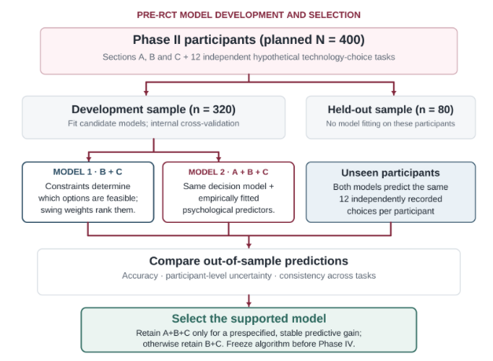
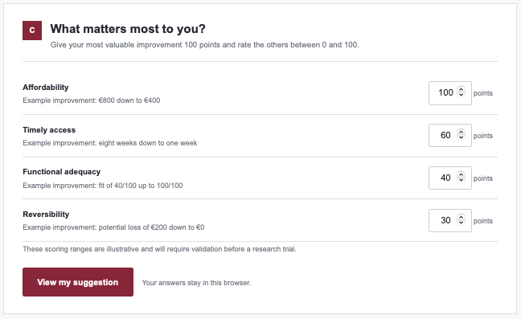
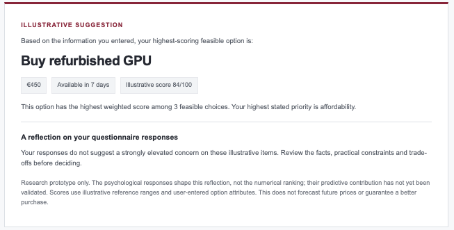
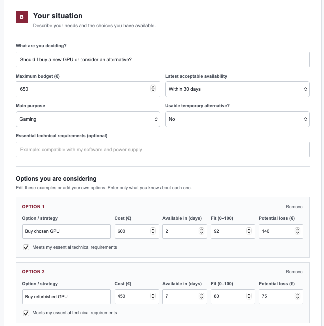
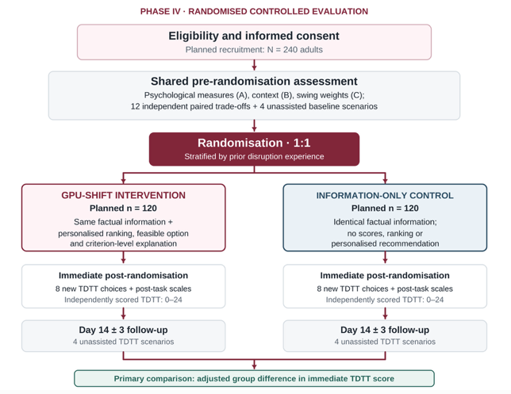

Development and Randomised Controlled Evaluation of a Psychologically Informed Mathematical Decision-Support Model for Sudden Technological Disruptions
Abstract
Sudden technological disruptions create complex decisions involving competing needs, limited resources and uncertain future outcomes. GPU-SHIFT proposes to develop and experimentally evaluate a psychologically informed mathematical decision-support model, using the graphics processing unit (GPU) shortage as its initial case. A sequential four-phase mixed-methods design will be employed. Phase I will analyse purposively sampled Reddit discussions using reflexive thematic analysis and exploratory temporal text networks to identify candidate psychological constructs, decision criteria and contextual constraints. Phase II will develop and evaluate psychological measures, collect contextual information and elicit individual decision priorities through swing weighting. Phase III will construct a transparent, feasibility-constrained multi-criteria value model that evaluates available alternatives according to individual circumstances and preferences without relying on speculative market forecasts. Two candidate models will undergo pre-randomisation predictive validation: a preference-based model incorporating contextual constraints and decision priorities (B+C), and an extended model additionally incorporating empirically estimated psychological relationships (A+B+C). Their ability to predict independently expressed choices will be compared using held-out data, with psychological variables retained in the recommendation algorithm only if they demonstrate meaningful additional predictive value. The selected model will undergo calibration, technical verification and preregistration before experimental evaluation. In Phase IV, 240 adults will be randomised to receive either personalised model-generated recommendations with explanations or identical decision-relevant information without recommendations. The primary outcome will be performance on an independently benchmarked Technology Disruption Transfer Task (TDTT), assessing constraint satisfaction, avoidance of dominated alternatives and consistency with separately elicited trade-off preferences. Secondary outcomes will include decision satisfaction, decisional conflict, perceived coping and unassisted follow-up performance. The study aims to determine whether personalised mathematical decision support improves the defensibility of simulated decisions and to explore its applicability beyond GPU-specific disruptions, without claiming established benefits for real-world purchasing decisions or long-term coping.
Keywords:technological disruption; decision support; psychological measurement; multi-criteria decision analysis; preference elicitation; predictive validation; randomised controlled trial.
Introduction
Technological markets can change quickly when access, prices or technical standards shift. Semiconductor supply chains are vulnerable to geographically concentrated production and dependencies between industries (Haramboure et al., 2023). The GPU shortage offers a concrete decision context: evidence links prices of certain graphics cards on secondary markets with cryptocurrency returns during the period of disruption (Wilson, 2022). A person requiring computing hardware may consequently have to buy at a premium, wait, substitute a lower-cost product or adjust an existing system. A decision that is acceptable to one person may be infeasible or inappropriate for another.
Psychological decision research explains why objectively similar choices may be appraised differently. Prospect theory characterises systematic departures from expected-utility descriptions in risky choice, including differential sensitivity to gains and losses (Kahneman & Tversky, 1979). Emotions can shape appraisal and choice (Lerner et al., 2015), while responses to uncertain future events vary across individuals (Carleton, 2016). These findings support assessment of urgency, uncertainty sensitivity, anticipated regret and related experiences; they do not show that such questionnaire scores can directly be inserted as mathematical decision weights.
Multiple-criteria decision analysis (MCDA) provides a transparent way of comparing alternatives with conflicting attributes. Additive value models combine criterion-specific value functions with elicited trade-off weights, provided relevant independence assumptions are defensible (Edwards & Barron, 1994; Greco et al., 2025). MCDA practice also distinguishes hard constraints, such as available budget, from preferences that may be traded against one another (Marsh et al., 2016). Unlike an arbitrary weighted questionnaire total, a multi-criteria recommendation requires explicitly defined alternatives, comparable outcome scales and defensible elicitation of how much each individual values improvement on those scales.
Existing work on decision aids provides a reason to evaluate, not presume, this approach. A Cochrane review covering 209 randomised studies reported improvements in knowledge and informed values-congruent choices for healthcare decisions, but not a clear reduction in regret (Stacey et al., 2024). Evidence from that field cannot establish that personalised mathematical recommendations improve choices in technology markets. Nor does a preference-weighted recommendation establish an objectively correct action where reasonable people value competing outcomes differently.
GPU-SHIFT addresses this problem through empirical model development followed by independent experimental testing. Reddit discussions will be analysed to identify candidate constructs and decision criteria rather than to generate numerical weights from theme frequency. Questionnaires will subsequently measure supported psychological constructs, elicit priorities and identify circumstances. A model based on multiattribute value theory will then rank feasible alternatives while showing the assumptions and uncertainties behind its recommendations. Crucially, the randomised trial will not score participants according to agreement with the model itself; an independently elicited preference benchmark and externally specified task facts will be used to evaluate the defensibility of their choices.
The proposal therefore treats its examples as hypothetical and its mathematical structure as provisional. The goal is to develop a testable, interpretable decision-support system capable of adapting to different technological disruptions, beginning with the GPU case and testing selected forms of contextual transfer.
Research Question and Hypotheses
Primary question: Does access to personalised GPU-SHIFT recommendations, beyond identical factual information, improve independently benchmarked decision performance during simulated technological disruptions?
H1 (confirmatory): Participants allocated to GPU-SHIFT will achieve higher immediate post-randomisation TDTT scores than information-only controls, adjusting for baseline performance.
H2 (secondary): GPU-SHIFT will improve decision satisfaction and preference alignment and reduce decisional conflict; effects on perceived coping will be tested separately.
Exploratory: Effects will be examined by disruption type, uncertainty sensitivity and individual constraints; unassisted performance at 14 days will test short-term transfer.
Methodology
Research Design and Overview
The research will follow a sequential four-phase mixed-methods programme informed by complex-intervention development guidance (Skivington et al., 2021): (I) qualitative discovery; (II) questionnaire and preference-elicitation development; (III) mathematical model construction and pre-trial calibration; and (IV) a two-arm randomised controlled trial. Outputs and analysis decisions will be documented at each transition. Phase I findings will determine candidate variables; Phase II will determine measurable constructs and preference procedures; Phase III will specify and freeze the algorithm; Phase IV will estimate its effect independently.
Phase I: Qualitative Exploration
Data source and window. English-language posts and comments will be sampled from r/buildapc, r/nvidia, r/AMD and r/pcmasterrace concerning GPU purchasing, prices, shortages, availability, delay and substitution. The planned historical window is 1 January 2022-31 December 2023, explicitly representing the later shortage and adjustment period rather than the crisis onset. The current Reddit for Researchers programme supplies a rolling five-year historical dataset with a six-month delay and requires institutional sponsorship and ethics documentation; the final retrievable window must be confirmed before extraction (Reddit, 2026). If the proposed period is unavailable, the approved accessible dates will be disclosed and the analysis reframed rather than reconstructed from unavailable posts.
Sampling. The target is 400 original threads, stratified across four subreddits and four six-month intervals (25 threads per subreddit per interval), with a maximum of five decision-relevant comments per thread (up to 2,000 comments). Search expressions will combine GPU/graphics card with shortage, buy, wait, price, stock, upgrade and alternative. Eligible discussions must contain an expressed choice, constraint, consequence, concern or coping response; promotional, duplicated, bot-generated and purely technical troubleshooting material will be excluded. Selection will favour variation in choice context and sentiment rather than popularity alone.
Analysis. Reflexive thematic analysis will use a purposively varied subset of 160 threads (10 per subreddit per interval, with linked relevant comments) to interpret experiences and develop candidate constructs (Braun & Clarke, 2006). Separately, all sampled text will be examined in four six-month co-occurrence networks using documented tokenisation, stop-word removal, minimum co-occurrence thresholds and comparable edge definitions, informed by textual-network methods (Segev, 2020). Network structures will describe changing discourse, not psychological prevalence or causal links. Themes will be mapped to possible scale constructs, hard constraints, option attributes and uncertainty mechanisms; neither theme counts nor network centrality will become preference weights. Analytical memos and reflexivity records will support interpretation.
Phase II: Questionnaire and Preference Development
Instrument architecture. Phase I outputs will generate three linked modules:
(A) reflective psychological items where constructs justify scale measurement;
(B) factual and scenario-specific variables such as budget, deadline, hardware requirements and currently feasible options; and
(C) preference elicitation based on swings between explicitly anchored worst and best levels of criteria.
Hypothetical starting constructs include uncertainty sensitivity, perceived urgency and anticipated regret; candidate decision criteria include affordability, timely access, functional adequacy and reversibility. These lists are not predetermined findings.
Development protocol. For each supported reflective construct, approximately six initial five-point items will be drafted; 18-24 psychological items are anticipated if three or four constructs are retained. Existing measures will be preferred where their content fits.
Six experts (two psychometricians, two decision researchers, one qualitative specialist and one technology specialist) will assess relevance and coverage. Item-level content validity indices and comments will guide revision; agreement of at least five of six experts (I-CVI >= .83) is a planning rule, not proof of construct validity (Polit et al., 2007). Two rounds of six cognitive interviews (n = 12) and a separate usability pilot (n = 40) will assess comprehension and the preference task (Boateng et al., 2018; Terwee et al., 2018).
Psychometric sample. Approximately 480 people will be recruited to obtain 400 analysable adults aged 18 years or older who have considered a technological purchase or upgrade in the previous 24 months. Half (n = 200) will be allocated to exploratory factor analysis using polychoric correlations and parallel analysis; the other half (n = 200) to confirmatory factor analysis using an ordinal estimator. Dimensionality, factor loadings, fit indices, McDonald's omega and convergent/discriminant evidence will be reported. Eighty respondents will repeat suitable dispositional measures after 14 days. Actual scale length and sample sufficiency will be reconsidered when the retained dimensionality is known. Contextual items and formative indices will not be subjected to reflective factor analysis.
Preference elicitation. Participants will rank defined criterion improvements, allocate a score of 100 to the most valuable swing and rate each remaining swing from 0 to 100. The resulting values will be normalised to sum to one. Criterion ranges must be shown before the weighting task and remain identical when alternatives are compared; comprehension checks will identify invalid or all-zero responses. Preference weights will not be obtained by summing psychological scale scores. Participants will additionally complete a set of standardised hypothetical technology-choice tasks to support pre-RCT predictive validation. These tasks will be used to examine whether psychological measures improve choice prediction beyond contextual constraints and directly elicited preferences. They will remain independent of the preference benchmark reserved for Phase IV. A separate direct trade-off task will also be developed for the RCT benchmark; it will not be used to train or calibrate SHIFT. The distinction between preference elicitation and psychological measurement follows MCDA guidance (Edwards & Barron, 1994; Marsh et al., 2016).
Phase III: Mathematical Decision-Support Model Development
Core Design
Phase III will develop the GPU-SHIFT mathematical model using the questionnaire and preference-elicitation procedures established in Phase II. The objective is to recommend decisions that are consistent with an individual's circumstances, practical requirements and personal priorities.
The model will follow an additive multi-attribute value approach, a method used in multiple-criteria decision analysis (MCDA) to compare alternatives across several important characteristics (Greco et al., 2025; Marsh et al., 2016).
In simple terms, the model will establish what matters to an individual, identify which alternatives are realistically available to them, and calculate which feasible alternative best matches their priorities.
The mathematical process will involve three steps:
Preference weighting: Convert the importance points assigned in Section C of Appendix A into numerical weights.
Alternative evaluation: Compare feasible alternatives using those weights and independently established information about their cost, availability and functional suitability.
Decision recommendation: Identify the highest-scoring alternative that satisfies the individual's essential requirements.
The psychological measures developed in Section A will be investigated for their potential contribution to the model. However, psychological scores will influence recommendations only where empirical evidence justifies their inclusion.
The final model will provide a ranked set of feasible alternatives, their calculated values, the main reasons for the recommendation and warnings when small changes in preferences could change the ranking.
Model Inputs and Mathematical Derivation
Step 1. Converting Individual Preferences into Mathematical Weights
The first equation uses responses from Section C - Decision Priorities of Appendix A.
Participants assign points to defined improvements in decision criteria, such as affordability, timely access and functional adequacy. The mathematical model converts these points into proportions representing the relative importance of each criterion.
Equation 1. Calculation of individual preference weights
Where:
i represents the participant.
j represents a decision criterion, such as affordability.
bᵢⱼ is the number of preference points assigned by that participant to the criterion.
m is the total number of criteria.
Σ means adding the points assigned to all criteria.
wᵢⱼ is the resulting preference weight.
Illustrative example- Suppose one participant assigns 100 points to affordability, 60 to timely access and 40 to functional adequacy.
| Criterion | Preference points | Calculated weight |
| Affordability | 100 | 100 ÷ 200 = 0.50 |
| Timely access | 60 | 60 ÷ 200 = 0.30 |
| Functional adequacy | 40 | 40 ÷ 200 = 0.20 |
| Total | 200 | 1.00 |
The model therefore assigns 50% of the evaluation weight to affordability, 30% to timely access and 20% to functional adequacy.
These weights represent the participant's priorities regarding the specified improvements, not the importance of psychological questionnaire items.
All weights must be non-negative and sum to one.
If the participant provides an invalid response or assigns zero points to every criterion, the preference task must be clarified or repeated.
Equation 1 only calculates the participant's preferences; it does not yet evaluate or recommend any alternative.
Step 2. Evaluating the Available Alternatives
The second step determines how well each alternative satisfies the participant's priorities.
Before calculating scores, the model uses Section B - Context and Current Situation of Appendix A to identify which alternatives are practically feasible.
For example, a participant might report a maximum budget of €500, a strict deadline of 14 days and essential software requirements. An alternative costing €650 or failing mandatory compatibility requirements will be excluded before scoring.
The remaining alternatives form the individual's feasible set (Fᵢ), meaning all options that satisfy their non-negotiable requirements.
Representation of Decision Alternatives
The model will consider alternatives such as purchasing the preferred product, selecting a substitute, repairing existing equipment or postponing a purchase. Each alternative will be evaluated using the same predefined criteria and available information concerning cost, accessibility, functional adequacy and reversibility. Waiting will be treated as a decision to postpone immediate action rather than an assumption that future prices or availability will improve. Where waiting is considered, its feasibility will depend on the individual's deadline, access to temporary alternatives and the identifiable consequences of delay. Unknown future prices and availability will not be assigned speculative values. If essential information is unavailable, the model will communicate this uncertainty rather than produce an unsupported numerical recommendation. This approach allows different decision strategies to be considered without introducing assumptions about future market outcomes.
Each feasible alternative is then evaluated across the decision criteria using predefined value scales ranging from 0 to 1:
0: The least desirable outcome within the specified reference range.
1: The most desirable outcome within that range.
For example, an affordable GPU might receive a value of 0.80 for affordability, whereas a more expensive option might receive 0.40. These values must be derived from clearly defined scoring rules, not assigned arbitrarily.
Equation 2. Weighted value of an alternative
Where:
Vᵢ(a) represents the overall value of alternative a for participant i.
wᵢⱼ represents the participant's preference weight from Equation 1.
vⱼ(a) represents how well the alternative performs on criterion j, using a predefined 0–1 scale.
Σ means adding the weighted values across all criteria.
The calculation involves multiplying the participant's importance weight for each criterion by the alternative's performance on that criterion, then adding the results.
Illustrative example- Suppose a feasible GPU has an affordability value of 0.80, a timely-access value of 0.70 and a functional-adequacy value of 0.65.
Using the participant's previously calculated weights:
Vᵢ(a) = (0.50 × 0.80) + (0.30 × 0.70) + (0.20 × 0.65)
Vᵢ(a) = 0.40 + 0.21 + 0.13 = 0.740
The alternative therefore receives an overall value of 0.740 out of 1.
This process is repeated for every feasible alternative using the same criterion definitions and reference ranges.
Higher values indicate greater alignment with the participant's stated priorities under the model's assumptions. They do not represent probabilities of success or guarantees of satisfaction.
Step 3. Selecting the Recommended Alternative
After calculating the values of all feasible options, the model identifies the alternative with the highest score.
Equation 3. Selection of the highest-scoring feasible alternative
Where:
aᵢ* represents the recommended alternative for participant i.
Fᵢ represents the alternatives satisfying that participant's essential requirements from Section B.
Vᵢ(a) represents the score calculated using Equation 2.
arg max means identifying the alternative with the highest value.
For example, suppose three feasible alternatives receive scores of 0.650, 0.740 and 0.710.
The model recommends the second alternative because 0.740 is the highest score among the feasible options.An alternative that violates an essential requirement cannot be recommended even if it would otherwise receive a high score.If multiple alternatives share the highest score, they will be presented together. If none satisfy the participant's requirements, the model will report that no feasible recommendation is available. Missing information necessary for assessing feasibility will require clarification.
Psychological-to-Mathematical Mapping
The GPU-SHIFT assessment contributes different types of information to the mathematical model.
| Questionnaire section | Information collected | Role in the model |
| Section A - Psychological assessment | Scores measuring supported psychological constructs | Examines psychological differences and whether they help explain preferences |
| Section B - Context and current situation | Budget, deadline, requirements and available resources | Identifies feasible alternatives (Fᵢ) |
| Section C - Decision priorities | Importance points assigned to defined improvements | Produces the weights (wᵢⱼ) used in Equations 1 and 2 |
The model also requires independently documented information about the alternatives, including their costs, availability and functional characteristics. In the experimental study, these attributes will be supplied through standardised decision tasks.
Psychological questionnaire scores will not automatically be converted into mathematical weights.
For example, an individual with high uncertainty sensitivity might value reversible decisions more strongly. However, this relationship must be demonstrated rather than assumed.
During model development, the researchers will examine whether psychological scores help predict participants' separately expressed preferences beyond the information already provided by swing weighting.
These relationships will be investigated using independent preference-choice data, with some responses used to estimate associations and separate held-out responses used to test whether the associations predict new choices. Statistical procedures will be applied to reduce unstable estimates.
If psychological characteristics provide consistent and meaningful additional predictive information, their influence on the model's criterion-value functions may be estimated and incorporated before the trial. Otherwise, psychological scores will remain explanatory measures and will not modify recommendations.
This ensures that the mathematical model does not assign unsupported numerical effects to psychological constructs.
Hypothetical Calculation: Application of the Complete Model
Consider a participant experiencing difficulty obtaining a suitable GPU for video editing.
Information from Section B
The participant reports:
Maximum budget: €500.
Required solution: within 14 days.
Main purpose: video editing.
Essential technical requirements: compatibility with their editing software.
Three alternatives satisfy these requirements: purchasing a used GPU, purchasing a lower-cost substitute, or repairing existing equipment. A new high-end GPU costing €700 is excluded because it exceeds the participant's maximum budget.
Information from Section C
The participant assigns preference points as follows:
Affordability: 100 points.
Timely access: 60 points.
Functional adequacy: 40 points.
Equation 1 converts these into weights of 0.50, 0.30 and 0.20.
Evaluation of alternatives
The model uses predefined value functions to assess the three feasible alternatives.
| Alternative | Affordability value | Timeliness value | Functional value |
| A: Buy used GPU | 0.40 | 0.90 | 0.90 |
| B: Buy lower-cost substitute | 0.80 | 0.70 | 0.65 |
| C: Repair existing equipment | 0.95 | 0.45 | 0.50 |
Note. All values are hypothetical. They represent the results of illustrative scoring rules rather than empirical observations. The actual study will establish and test these rules using defined attribute ranges and independent information about the alternatives.
Applying Equation 2:
Alternative A - Buy used GPU
Vᵢ(A) = 0.50(0.40) + 0.30(0.90) + 0.20(0.90) = 0.650
Alternative B - Buy lower-cost substitute
Vᵢ(B) = 0.50(0.80) + 0.30(0.70) + 0.20(0.65) = 0.740
Alternative C - Repair existing equipment
Vᵢ(C) = 0.50(0.95) + 0.30(0.45) + 0.20(0.50) = 0.710
Equation 3 selects Alternative B, because it has the highest overall value among the feasible alternatives.
However, a different participant might assign greater importance to functional adequacy. If their weights are 0.15 for affordability, 0.20 for timely access and 0.65 for functional adequacy, the scores become:
| Alternative | New weighted value |
| A: Buy used GPU | 0.825 |
| B: Buy lower-cost substitute | 0.683 |
| C: Repair existing equipment | 0.558 |
For this second participant, Alternative A becomes the recommended decision.
The alternatives and their characteristics remain unchanged; only the participant's preferences differ. This demonstrates how GPU-SHIFT can produce individualised recommendations without assuming that the same alternative is best for everyone.
The calculations are illustrative and do not establish that either recommendation will produce superior real-world outcomes.
Pre-RCT Predictive Validation and Model Selection
Before the randomised controlled trial, a predictive-validation study will examine whether psychological assessment improves decision prediction beyond contextual information and directly elicited preferences. This investigation will use the 400 analysable participants recruited during Phase II, without requiring a separate experimental sample.
Following questionnaire completion, participants will undertake 12 additional hypothetical technology-choice tasks presenting three alternatives with predefined costs, availability, functional characteristics and feasibility constraints. Participants will independently select their preferred alternative without viewing model-generated recommendations. These tasks will be distinct from the independent preference benchmark reserved for Phase IV.
Two candidate mathematical models will be developed:
Model 1 (B+C): Uses contextual constraints from Section B to identify feasible alternatives and swing weights from Section C to calculate preference-based values.
Model 2 (A+B+C): Retains the same feasibility and preference calculations but additionally incorporates psychological constructs from Section A through empirically estimated relationships with decision preferences.
Participants will be divided into a development sample (n = 320) and an independent held-out validation sample (n = 80). Both candidate models will be evaluated using the same independently expressed choices from the 12 hypothetical decision tasks. Model 1 will predict choices using contextual constraints and directly elicited preference weights, while Model 2 will additionally incorporate psychological predictors estimated through regularised statistical modelling. Model development and parameter estimation will be restricted to the development sample, with internal cross-validation used to reduce overfitting.
The models will be compared on their ability to predict previously unseen participants' choices. The primary comparison will be the proportion of correctly predicted choices, with confidence intervals calculated at the participant level to account for repeated decisions. As a provisional selection criterion, Model 2 will be retained only if it demonstrates an absolute improvement of at least five percentage points, with a 95% confidence interval supporting a positive difference, while maintaining feasibility constraints and stable predictions. The threshold and its statistical adequacy will be reviewed during independent pilot planning and fixed before validation data are examined. Otherwise, the simpler B+C model will be selected. The chosen model will subsequently undergo technical verification and preregistration before Phase IV.
The extended model will be retained only if the evidence supports its additional predictive value; otherwise, the simpler B+C model will be selected. The chosen algorithm will undergo final technical and usability checks before being frozen and preregistered for Phase IV. This procedure evaluates predictive validity, whereas the subsequent RCT will independently establish whether the completed intervention improves decision quality.

Figure 1. Pre-RCT predictive validation and model selection
An interactive web-based prototype of GPU-SHIFT has been developed to demonstrate the proposed psychological assessment and mathematical decision-support framework. The website allows users to complete an illustrative psychological questionnaire (Section A), specify their contextual circumstances and available alternatives (Section B), and assign individual decision priorities through swing weighting (Section C). Using predefined reference values and feasibility constraints, the prototype calculates preference-weighted scores and presents a personalised decision suggestion with an accompanying explanation. Psychological responses currently inform a descriptive reflection rather than modifying the numerical recommendation, as their predictive contribution has not yet been empirically established. The prototype is intended solely to illustrate the proposed intervention and does not constitute a validated assessment instrument or the final experimental implementation. The interactive demonstration is accessible at https://gpu-shift.vercel.app, and its source code is available at https://github.com/pr15das/gpu-shift. The mathematical procedures, questionnaire content and implementation will be refined and validated during the subsequent research phases.



Figure 2. Interactive GPU-SHIFT Research Prototype: Psychological Assessment, Decision Inputs, and Personalised Recommendation Interface
Calibration, Quality Assurance and Model Freeze
Before the randomised controlled trial, the model will undergo calibration and independent testing to establish whether its calculations are consistent, understandable and sufficiently reliable for experimental evaluation.
Calibration will establish predefined, criterion-specific reference ranges for converting alternative characteristics into comparable values between 0 and 1. For affordability, timely access and reversibility, values will be calculated using anchored transformations in which 0 represents the least desirable reference outcome and 1 the most desirable. For example, hypothetical ranges may include costs of €800–€400, waiting periods of eight weeks–one week and potential unrecoverable losses of €200–€0. Intermediate values will be calculated proportionally within these ranges, with outcomes outside the specified limits bounded between 0 and 1. Functional adequacy will be assessed using a predefined rubric distinguishing minimum technical suitability from comfortably meeting the intended requirements, with intermediate levels established through development and pilot testing. Reference ranges and scoring procedures will be established using relevant decision contexts, reviewed for interpretability and applied consistently across alternatives within each task. These ranges will also serve as the explicit improvement anchors for preference elicitation in Section C. Non-negotiable constraints, including maximum budget, deadlines and essential compatibility requirements, will be assessed separately before value calculations. The resulting scoring rules will undergo sensitivity analysis and independent review before the model is finalised.
The following checks will be conducted:
Mathematical testing: Evaluate 100 simulated decision cases covering budget restrictions, technical incompatibility, missing information, ties, extreme responses and alternatives that are clearly inferior to other feasible options.
Preference sensitivity: Examine whether modest changes in participants' preference weights alter the resulting recommendations. Pre-specified changes of ±10 percentage points, followed by normalisation, will be tested.
Independent review: Three reviewers will audit 30 simulated cases to assess the correctness of feasibility decisions, calculations and recommendations.
Interface pilot: Forty adults not participating in the RCT will test the complete assessment and recommendation process. Comprehension difficulties, invalid inputs, calculation errors and unexpected recommendation changes will be documented.
The researchers will also examine whether decision criteria overlap excessively, since counting the same advantage under multiple criteria could distort the final recommendation.
Following these procedures, the model's variables, input definitions, scoring rules, parameter estimates, feasibility conditions and recommendation algorithm will be fixed and preregistered before Phase IV.
No RCT outcome data will be used to modify the mathematical model during its experimental evaluation.
The completed GPU-SHIFT model will therefore provide transparent, preference-based recommendations that account for an individual's circumstances while allowing the effectiveness of those recommendations to be evaluated independently.
Phase IV: Two-Arm Randomised Controlled Trial
Recruitment, Allocation and Conditions
The definitive study will be a single-session, two-arm, 1:1 parallel randomised superiority trial with an unassisted 14-day follow-up, planned and reported using SPIRIT 2025 and CONSORT 2025 guidance (Chan et al., 2025; Hopewell et al., 2025). A target of 240 adults (120 per arm), recruited through universities and technology communities, will be eligible if they read English and have previously considered a technology purchase, upgrade or subscription. Prior Phase II/III participants and duplicate entries will be excluded. Concealed computer-generated permuted blocks of varying size will be stratified by prior disruption experience (yes/no).
Both groups will complete the same baseline assessment and view identical decision scenarios, factual outcome tables, assumptions and response deadlines through visually comparable interfaces. The experimental arm will additionally receive SHIFT's personalised option ranking, recommended feasible action and criterion-level explanation. The information-only arm will not receive scores, rankings or recommendations. Participants may override the system. Participant blinding is not possible; independent scoring rules will be fixed before recruitment, and analysis datasets will conceal allocation codes wherever practical.
Independent Preference Benchmark and Task
To prevent circular validation, before randomisation each participant will complete 12 direct paired trade-off judgements about changes in cost, waiting time, functional adequacy and reversibility. These comparisons will use attribute levels rather than labelled TDTT options and will be independent of the swing-weight questionnaire and SHIFT software. Each of the eight TDTT scenarios will be constructed to include at least one relevant, independently benchmarked trade-off. The scoring team will preregister, for each scenario, which alternative comparisons are genuinely distinguished by those direct judgements and how ambiguous or contradictory judgements are handled. No response to SHIFT, its value scores or experimental assignment will contribute to the benchmark.
The immediate Technology Disruption Transfer Task (TDTT) will contain eight previously unseen scenarios, four involving hardware-related supply or replacement disruption and four involving software, service-access or compatibility disruption. Each will specify three or four alternatives, clear non-negotiable constraints, verifiable attribute consequences and any uncertainty assumptions. Four parallel scenarios will be administered at baseline without guidance, and a separate four-scenario form at day 14 without guidance. Scenario sets, dominance relationships, benchmarks and difficulty will be piloted independently; participants will not receive corrective feedback on test choices.
Primary and Secondary Outcomes
The primary outcome will be the immediate eight-scenario TDTT defensibility total (0-24). Each selected option is scored by a preregistered rule using scenario facts and the independent pre-randomisation trade-off benchmark: 0 = violates a non-negotiable constraint; 1 = feasible but strictly dominated by another feasible option; 2 = feasible and non-dominated but directly conflicts with a clear independently elicited trade-off judgement applicable to that scenario; 3 = feasible and non-dominated without a demonstrated benchmark conflict. Ambiguous benchmark responses will not be treated as evidence of inconsistency. A strict-dominance relation requires another feasible option to be at least as good on every specified criterion and better on at least one. Pilot testing will ensure the eight scenarios are not dominated by trivial feasibility decisions and can discriminate participants across the score range.
This outcome measures independently operationalised defensibility, not objectively optimal personal utility. Secondary outcomes comprise feasibility-violation and dominance rates; preference-concordant selection rates; satisfaction with decision (contextually adapted six-item Satisfaction with Decision Scale; Holmes-Rovner et al., 1996); decisional conflict (contextually assessed Decisional Conflict Scale; O'Connor, 1995); a brief, Phase-II-tested perceived coping/self-efficacy scale; time per decision; and unassisted four-scenario TDTT performance at day 14. Adapted health-decision measures will be checked for content relevance and internal consistency rather than assumed valid in this setting.
Procedure and Sample Size
Sequence: electronic consent and eligibility; baseline demographics, psychological scales, context and swing weights; independent direct-trade-off benchmark and four unassisted baseline scenarios (approximately 25 minutes); randomisation; eight assisted or information-only TDTT decisions (approximately 30 minutes); post-task scales (approximately 10 minutes); and remote unassisted follow-up at 14 ± 3 days (approximately 15 minutes). The experimental and control groups will have equal factual exposure and comparable task time limits.

Figure 3. Randomised controlled trial procedure
For planning, a two-sided alpha of .05, 80% power and standardised difference d = 0.40 imply approximately 100 analysable participants per arm for an independent-group comparison. A 15% allowance for unavailable immediate primary scores yields 120 recruited per arm (N = 240). This is provisional: the required N will be recalculated using independently piloted TDTT variability, baseline-outcome correlation and any ceiling effects before trial preregistration. The planning effect size is not presented as an established SHIFT effect.
Statistical Analysis and Interpretation
Primary intention-to-treat analysis will compare immediate TDTT totals by ANCOVA, with randomised arm and baseline TDTT score as predictors; prespecified stratification variables may also be included. The adjusted mean difference, 95% confidence interval, exact p-value and standardised effect estimate will be reported. Residual diagnostics will be inspected; a robust or ordinal sensitivity model will be prespecified if pilot data indicate marked ceiling effects. Follow-up analyses will compare unassisted performance at day 14 and use mixed-effects models where repeated observations are genuinely comparable. Secondary outcomes will be modelled according to their scale types with a stated multiplicity strategy; moderator analyses will be exploratory. Missingness, non-adherence, overrides and reasons for attrition will be documented, with prespecified multiple-imputation sensitivity analysis where assumptions are defensible. A blinded, locked scoring implementation will be used for both trial arms.
The trial will identify whether displaying SHIFT recommendations improves independently benchmarked simulated choices relative to information alone. It will not establish that participants made the best possible real-world purchases, that the model forecasts future prices, or that any coping benefit persists beyond the measured follow-up.
Ethics, Transparency and Data Management
Institutional ethics approval will be sought before Reddit access, scale development or participant recruitment. Reddit access is conditional on its research programme, institutional sponsorship, data-use restrictions and respect for deletion requests (Reddit, 2026). Research reports will paraphrase potentially traceable posts and exclude usernames and identifying quotations. Survey and trial data will be pseudonymised, stored on access-controlled university-approved systems, retained according to the approved protocol and processed under applicable data-protection requirements. Participation will be voluntary with informed consent, withdrawal procedures and clear communication that SHIFT is experimental decision support, not financial advice. Code, synthetic test cases, model specifications and de-identified trial outputs will be shared only to the extent permitted by consent, ethics approval and platform terms.
Anticipated Limitations and Mitigation
Reddit users are not representative of all affected consumers; sampling will seek contextual variation, and claims will remain limited to online discourse.
The 2022-2023 archive captures later disruption and adaptation, not the full 2020-2021 onset; temporal inference will be explicitly restricted to the observed period.
Swing weights and additive value functions simplify changing, sometimes inconsistent preferences; calibration, reference anchors and sensitivity analysis will make limitations visible.
Independent trade-off benchmarks remain an operational proxy for preference-concordant quality, not a universal objective standard; scoring validity will be piloted and openly reported.
A single-session simulated RCT cannot demonstrate future market prediction, real-world purchasing success or sustained coping; the day-14 task offers only short-term unassisted transfer evidence.
References
Boateng, G. O., Neilands, T. B., Frongillo, E. A., Melgar-Quiñonez, H. R., & Young, S. L. (2018). Best practices for developing and validating scales for health, social, and behavioral research: A primer. Frontiers in Public Health, 6, Article 149. https://doi.org/10.3389/fpubh.2018.00149
Braun, V., & Clarke, V. (2006). Using thematic analysis in psychology. Qualitative Research in Psychology, 3(2), 77-101. https://doi.org/10.1191/1478088706qp063oa
Carleton, R. N. (2016). Into the unknown: A review and synthesis of contemporary models involving uncertainty. Journal of Anxiety Disorders, 39, 30-43. https://doi.org/10.1016/j.janxdis.2016.02.007
Chan, A.-W., Boutron, I., Hopewell, S., Moher, D., Schulz, K. F., Collins, G. S., Tunn, R., Aggarwal, R., Berkwits, M., Berlin, J. A., Bhandari, N., Butcher, N. J., Campbell, M. K., Chidebe, R. C. W., Elbourne, D. R., Farmer, A. J., Fergusson, D. A., Golub, R. M., Goodman, S. N., ... Hróbjartsson, A. (2025). SPIRIT 2025 statement: Updated guideline for protocols of randomised trials. BMJ, 389, e081477. https://doi.org/10.1136/bmj-2024-081477
Edwards, W., & Barron, F. H. (1994). SMARTS and SMARTER: Improved simple methods for multiattribute utility measurement. Organizational Behavior and Human Decision Processes, 60(3), 306-325. https://doi.org/10.1006/obhd.1994.1087
Greco, S., Słowiński, R., & Wallenius, J. (2025). Fifty years of multiple criteria decision analysis: From classical methods to robust ordinal regression. European Journal of Operational Research, 323(2), 351-377. https://doi.org/10.1016/j.ejor.2024.07.038
Haramboure, A., Lalanne, G., Schwellnus, C., & Guilhoto, J. (2023). Vulnerabilities in the semiconductor supply chain (OECD Science, Technology and Industry Working Papers No. 2023/05). OECD Publishing. https://doi.org/10.1787/6bed616f-en
Holmes-Rovner, M., Kroll, J., Schmitt, N., Rovner, D. R., Breer, M. L., Rothert, M. L., Padonu, G., & Talarczyk, G. (1996). Patient satisfaction with health care decisions: The Satisfaction with Decision Scale. Medical Decision Making, 16(1), 58-64. https://doi.org/10.1177/0272989X9601600114
Hopewell, S., Chan, A.-W., Collins, G. S., Hróbjartsson, A., Moher, D., Schulz, K. F., Tunn, R., Aggarwal, R., Berkwits, M., Berlin, J. A., Bhandari, N., Butcher, N. J., Campbell, M. K., Chidebe, R. C. W., Elbourne, D. R., Farmer, A. J., Fergusson, D. A., Golub, R. M., Goodman, S. N., ... Boutron, I. (2025). CONSORT 2025 statement: Updated guideline for reporting randomised trials. BMJ, 389, e081123. https://doi.org/10.1136/bmj-2024-081123
Kahneman, D., & Tversky, A. (1979). Prospect theory: An analysis of decision under risk. Econometrica, 47(2), 263-291. https://doi.org/10.2307/1914185
Lerner, J. S., Li, Y., Valdesolo, P., & Kassam, K. S. (2015). Emotion and decision making. Annual Review of Psychology, 66, 799-823. https://doi.org/10.1146/annurev-psych-010213-115043
Marsh, K., IJzerman, M., Thokala, P., Baltussen, R., Boysen, M., Kaló, Z., Lönngren, T., Mussen, F., Peacock, S., Watkins, J., & Devlin, N. (2016). Multiple criteria decision analysis for health care decision making-Emerging good practices: Report 2 of the ISPOR MCDA Emerging Good Practices Task Force. Value in Health, 19(2), 125-137. https://doi.org/10.1016/j.jval.2015.12.016
O'Connor, A. M. (1995). Validation of a Decisional Conflict Scale. Medical Decision Making, 15(1), 25-30. https://doi.org/10.1177/0272989X9501500105
Polit, D. F., Beck, C. T., & Owen, S. V. (2007). Is the CVI an acceptable indicator of content validity? Appraisal and recommendations. Research in Nursing & Health, 30(4), 459-467. https://doi.org/10.1002/nur.20199
Reddit. (2026). Reddit for Researchers Program. https://support.reddithelp.com/hc/en-us/articles/49381918834964-Reddit-for-Researchers-Program
Segev, E. (2020). Textual network analysis: Detecting prevailing themes and biases in international news and social media. Sociology Compass, 14(4), Article e12779. https://doi.org/10.1111/soc4.12779
Skivington, K., Matthews, L., Simpson, S. A., Craig, P., Baird, J., Blazeby, J. M., Boyd, K. A., Craig, N., French, D. P., McIntosh, E., Petticrew, M., Rycroft-Malone, J., White, M., & Moore, L. (2021). A new framework for developing and evaluating complex interventions: Update of Medical Research Council guidance. BMJ, 374, n2061. https://doi.org/10.1136/bmj.n2061
Stacey, D., Lewis, K. B., Smith, M., Carley, M., Volk, R., Douglas, E. E., Pacheco-Brousseau, L., Finderup, J., Gunderson, J., Barry, M. J., Bennett, C. L., Bravo, P., Steffensen, K., Gogovor, A., Graham, I. D., Kelly, S. E., Légaré, F., Sondergaard, H., Thomson, R., ... Trevena, L. (2024). Decision aids for people facing health treatment or screening decisions. Cochrane Database of Systematic Reviews, 2024(1), CD001431. https://doi.org/10.1002/14651858.CD001431.pub6
Terwee, C. B., Prinsen, C. A. C., Chiarotto, A., Westerman, M. J., Patrick, D. L., Alonso, J., Bouter, L. M., de Vet, H. C. W., & Mokkink, L. B. (2018). COSMIN methodology for evaluating the content validity of patient-reported outcome measures: A Delphi study. Quality of Life Research, 27, 1159-1170. https://doi.org/10.1007/s11136-018-1829-0
Wilson, L. (2022). GPU prices and cryptocurrency returns. Applied Finance Letters, 11, 2-8. https://doi.org/10.24135/afl.v11i.503
Appendix A
Illustrative GPU-SHIFT Assessment Instrument
Provisional sample only. The questions below demonstrate anticipated item types and layout; they are not validated measures. The full item pool, response formats and criterion ranges will be finalised after the Phase I findings and Phase II development procedures.
Participant instructions. Please answer with reference to a technology purchase, replacement or upgrade you are considering under uncertain availability or pricing. There are no right or wrong answers.
Section A. Psychological Decision Experience
Response scale. 1 = Strongly disagree; 2 = Disagree; 3 = Neither agree nor disagree; 4 = Agree; 5 = Strongly agree. Tick one answer per statement.
| Statement | 1 | 2 | 3 | 4 | 5 |
| Uncertainty sensitivity | |||||
| I find it difficult to decide when the future availability of a product is uncertain. | ☐ | ☐ | ☐ | ☐ | ☐ |
| I feel uncomfortable buying when I cannot tell whether prices will change soon. | ☐ | ☐ | ☐ | ☐ | ☐ |
| Uncertain market conditions sometimes make me delay a decision I need to make. | ☐ | ☐ | ☐ | ☐ | ☐ |
| Perceived urgency | |||||
| When technology is needed for work or study, I feel pressure to decide quickly. | ☐ | ☐ | ☐ | ☐ | ☐ |
| A delay in obtaining the technology would create significant difficulties for me. | ☐ | ☐ | ☐ | ☐ | ☐ |
| When my current device no longer meets my needs, I feel I must act immediately. | ☐ | ☐ | ☐ | ☐ | ☐ |
| Anticipated regret | |||||
| I worry that I may regret buying now if prices fall later. | ☐ | ☐ | ☐ | ☐ | ☐ |
| I worry that I may regret waiting if availability becomes worse. | ☐ | ☐ | ☐ | ☐ | ☐ |
| I imagine how disappointed I would feel if a better option became available after I decided. | ☐ | ☐ | ☐ | ☐ | ☐ |
The nine statements shown are examples from a larger proposed item pool (approximately 18–24 initial items if three or four reflective constructs are supported).
Section B. Context and Current Situation
1. Technology decision ☐ New purchase ☐ Replacement/upgrade ☐ Alternative solution ☐ Waiting
2. Maximum available budget € __________________
3. Deadline for a workable solution ☐ 1 week ☐ 2 weeks ☐ 1 month ☐ 3 months ☐ No fixed deadline
4. Main use ☐ Study ☐ Work ☐ Gaming ☐ Creative tasks ☐ Other __________
5. Essential technical requirement _____________________________________________________
6. Usable temporary alternative available? ☐ Yes ☐ No ☐ Unsure
Section C. Individual Decision Priorities
The following four hypothetical improvements represent fixed changes from a less desirable to a more desirable outcome. These ranges are examples only and would be made scenario-specific after instrument development.
| Criterion | Defined improvement | Rank | Points |
| Affordability | Total cost falls from €800 to €400. | ____ | ____ |
| Timely access | Waiting time falls from eight weeks to one week. | ____ | ____ |
| Functional adequacy | A device changes from meeting minimum needs to comfortably handling expected tasks. | ____ | ____ |
| Reversibility | Potential unrecoverable loss from changing the decision falls from €200 to €0. | ____ | ____ |
Step 1 - Rank. Place 1 beside the most valuable improvement, followed by 2, 3 and 4.
Step 2 - Assign points. Give the most valuable improvement 100 points. Give each remaining improvement 0–100 points relative to that improvement; values are subsequently normalised to sum to one.
Step 3 - Comprehension check. Which change would you value more in your current circumstances?
☐ A €400 price reduction ☐ Reducing the waiting time from eight weeks to one week
☐ Better performance above minimum requirements ☐ Avoiding €200 in potential unrecoverable loss
Section D. Reflection
1. How confident are you that you could make a suitable decision in this situation?
☐ 1 Not at all confident ☐ 2 ☐ 3 ☐ 4 ☐ 5 Extremely confident
2. How stressful do you find this decision?
☐ 1 Not at all stressful ☐ 2 ☐ 3 ☐ 4 ☐ 5 Extremely stressful
3. What is the main difficulty you face when making this decision?
_____________________________________________________________________________
Interpretation and planned validation
Section A provides illustrative psychological items subject to expert content review, cognitive interviewing, exploratory and confirmatory factor analyses, reliability estimation and test–retest evaluation. Section B collects descriptive circumstances and non-negotiable constraints. Section C elicits criterion-specific swing weights and will be evaluated for comprehensibility and preference consistency, not by factor analysis. Section D provides illustrative reflection items. The independently administered RCT trade-off benchmark and the TDTT are separate from this assessment and are not reproduced here.
Appendix B
Illustrative Technology Disruption Transfer Task (TDTT)
Provisional assessment instrument
The following examples illustrate the anticipated structure, response format and independent scoring procedures of the Technology Disruption Transfer Task (TDTT). They are hypothetical and have not undergone empirical validation. The final scenarios, decision attributes, independent preference benchmarks and scoring rules will be developed, piloted and preregistered before the randomised controlled trial.
Participant Instructions
You will be presented with situations involving unexpected changes in the availability, affordability or accessibility of technology. Each situation includes practical requirements and several possible courses of action.
Please carefully consider the information provided and select the alternative you would choose in that situation.
There are no universally correct preferences. Different individuals may reasonably prioritise affordability, timely access, functional adequacy or reversibility differently. Assume that all information explicitly provided in each scenario is accurate and that unspecified circumstances are equivalent across alternatives.
Select one alternative per scenario.
Scenario 1. GPU Shortage and Equipment Replacement
Situation
You use a computer for university coursework and video editing. Your graphics card has become unreliable, and replacement GPUs are unusually expensive following a supply disruption.
You must obtain a workable solution within 14 days.
Your circumstances
Maximum available budget: €550.
A functioning graphics solution is required within 14 days.
Any selected solution must support your essential editing software.
Higher graphical performance would be beneficial but is not essential.
Available alternatives
| Alternative | Total cost | Available in | Functional adequacy | Potential unrecoverable loss |
| A. Purchase a used GPU | €500 | 2 days | Comfortably meets needs | €160 |
| B. Repair the existing GPU | €200 | 7 days | Meets minimum needs | €20 |
| C. Purchase a basic substitute | €520 | 12 days | Meets minimum needs | €130 |
| D. Purchase a new high-end GPU | €690 | 1 day | Comfortably meets needs | €40 |
Note. All alternatives are assumed technically compatible. Potential unrecoverable loss refers to the specified financial loss if the decision later needs to be reversed. Values are hypothetical and provided for illustration.
Question
Considering your requirements and priorities, which alternative would you choose?
☐ A. Purchase a used GPU
☐ B. Repair the existing GPU
☐ C. Purchase a basic substitute
☐ D. Purchase a new high-end GPU
Scenario 2. Software Access Disruption
Situation
You are working on a university research project when access to your usual data-analysis software is interrupted. You need a functioning analysis tool within seven days to continue your work.
Your institution has confirmed that its existing software licence will be restored in five days. You may instead purchase temporary access or use an alternative programme.
Your circumstances
Maximum budget for a solution: €200.
Access is required within seven days.
The chosen software must support your operating system and allow CSV data import and export.
Advanced analytical features would be useful but are not essential.
Available alternatives
| Alternative | Total cost | Available in | Functional adequacy | Potential unrecoverable loss |
| A. Purchase temporary professional access | €150 | Immediately | Full required and advanced features | €90 |
| B. Use free alternative software | €0 | 1 day | Meets essential requirements | €0 |
| C. Wait for confirmed institutional access | €0 | 5 days | Full required and advanced features | €0 |
| D. Purchase an enterprise licence | €230 | Immediately | Full required and advanced features | €60 |
Note. The restoration date in Alternative C is explicitly confirmed within this hypothetical scenario. No prediction of future prices or uncertain market availability is required.
Question
Considering your requirements and priorities, which alternative would you choose?
☐ A. Purchase temporary professional access
☐ B. Use free alternative software
☐ C. Wait for confirmed institutional access
☐ D. Purchase an enterprise licence
Researcher Scoring Guide
Not displayed to participants during assessment
TDTT responses will be scored using a preregistered framework based on externally specified scenario facts and independently elicited trade-off preferences.
Each scenario will receive a score between 0 and 3.
| Score | Scoring criterion |
| 0 | The selected alternative violates at least one non-negotiable constraint. |
| 1 | The alternative is feasible but strictly dominated by another feasible alternative. |
| 2 | The alternative is feasible and non-dominated but conflicts with a clear, applicable, independently elicited trade-off preference. |
| 3 | The alternative is feasible and non-dominated without a demonstrated conflict with the independent preference benchmark. |
An alternative is strictly dominated when another feasible alternative performs at least as well on every specified decision criterion and better on at least one. Independent preferences will be established before randomisation through direct paired trade-off judgements involving criterion changes rather than the labelled TDTT alternatives.
For Scenario 1, Alternative D violates the budget constraint and would receive 0. Alternative C is feasible but dominated by Alternative B, which costs less, is available sooner, provides the same stated level of functional adequacy and involves less potential unrecoverable loss; choosing C would therefore receive 1. Alternatives A and B are feasible and non-dominated. Their scores would depend on whether the participant's choice conflicts with a clear, applicable independent trade-off judgement.
For Scenario 2, Alternative D violates the budget constraint and would receive 0. Alternatives A, B and C are feasible and non-dominated under the stated attributes because each offers a different combination of immediate access, cost, functionality and reversibility. Their scores would depend on the independently established trade-off benchmark.
Where the independent preference judgements are ambiguous, contradictory or insufficient to distinguish the relevant alternatives, no preference conflict will be inferred. A feasible, non-dominated choice without a demonstrated benchmark conflict will receive 3.
Planned Administration and Validation
The final Phase IV assessment will comprise eight immediate post-randomisation scenarios: four involving hardware-related technological disruptions and four involving software, service-access or compatibility disruptions. Four parallel scenarios will be completed independently at baseline, with another four administered without assistance at the 14-day follow-up.
Scenario development and pilot testing will examine the clarity of instructions, feasibility constraints, dominance relationships, trade-off demands and variation in task difficulty. The final assessment will avoid excessive reliance on trivial feasibility decisions and will include meaningful comparisons between non-dominated alternatives.
The eight immediate scenario scores will be summed to obtain the primary TDTT total, ranging from 0 to 24. Scoring rules will remain independent of GPU-SHIFT's recommendation algorithm, participant exposure to recommendations and experimental allocation.
The TDTT therefore measures the independently operationalised defensibility of simulated decisions, rather than objectively optimal personal utility or the success of subsequent real-world purchases.